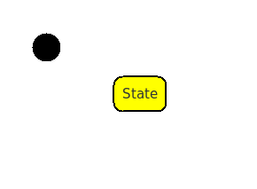

Module Design
To create a module, press on the module symbol in the Tool-Bar
and then click on the panel in the right side.
We have to build a semaphore, so we can reasonably change the name
of the module, from Module to Semaphore . To do this
we need to open the module editing dialog box.
Here we have 4 tabs that are used in the developing
process, we are working on the first one, that includes the name and
the generic comment that could be doxygen compliant.
The first thing a program does, when it starts to run, is to
initialize the instances by invoking the constructors.
Our constructor is called Init function and it is invoked
inside a unique function that must be called before the firmware
main loop.
If a module has a proper static machine it must have a Init
that is used to set the initial state, the internal timer and
eventually many other things.
Even if the module does not have a static machine, a constructor can
be useful, so it is always generated by default. If you really do
not like it, you can un-flag the proper checkbox, and the module
will not be involved in the initialization process.
The simplified design of a semaphore ( for a perfect world ) ,
should be a loop though a sequence of four states:
- Red on the Direct way, Yellow
on the Crossing way
- Green on the Direct way, Red on
the Crossing way
- Yellow on the Direct way, Red on
the Crossing way
 Red on the Direct way, Green on
the Crossing way
Red on the Direct way, Green on
the Crossing way
A traffic semaphore works with timers, we need four timers,
each of one representing the time to the next state: we store the
time values as public attributes, that can be eventually modified by
other modules, respectively : timeYC , timeGD , timeYD
and timeGC.
We can place these values into the Attributes tab with a
default value, using the New button to apply a new
attribute, and compile the fields :
We are defining a Public attribute of type long,
that is the standard type for the time delay and must be the signed
version of the absolute time variable.
In the case of Arduino, this variable is an unsigned long
returned by millis(). We use the two complements arithmetic
to resolve the overflow problem.
The flag Interrupt Safe declares this variable as volatile, but if
we do not need to set or use this variables from an interrupt we do
not care of it.
The public attribute is defined and exported to the other
modules as Semaphore_timeYC , whereas in the module
body is redefined as timeYC.
extern long Semaphore_timeYC;
As well as we have defined timeYC, we can define the
remaining timers, timeGD (60000 ms), timeYD (5000
ms), timeGC (45000ms) :
and then close the dialog box.
At this point we can File→Save the model.
The file model.srz contains the
model and eventually a part of the code, but not the whole code
that in safe in the associated C files into the related code
blocks.
Anyway, this model represents your work and should be preserved
with your preferred version control, because it is a simple JSON
file.
Note: JSON is simple to manage with GIT or SVN
and this is not a coincidence: you are free to think a future with
a centralized web accessible code storage and generation if you
want.
Welcome to the machine
Ins
After defined the properties of the module, we have to explain
what it has to do.
To do this, we can describe the features of our semaphore with a Finite
State Machine.
We can select the Module object by keeping the
left-mouse-button pressed and the press “Ins” on the
keyboard:
FSM design
Something has changed.
In the left bar you can see another context called Semaphore
(that is the name of the module) the Toolbar is different and in the
drawing, there is a new context with a black spot.
The black spot is movable but not removable,
it is called Init State and it is the starting point for
the machine associated to the module.
Then we can navigate among the contexts by selecting them from the
list.
Note: we said that a graphic object can be Standalone
or a Junction but this is an incomplete information
because we have the Primary objects too. A Primary object
is derived from the Standalone prototype, but has the capability
to contain one new Context that in the model and in the JSON
structure, become a new array of objects
States
Select the State symbol in the Tool-Bar
and click into the new created context :

We have introduced the first State.
A state has a name and several properties, we can start by changing
the name to YCross (Red on Direct) and
to do this we need to open the State Editing Dialog Box.
In addition to the name change, we have three fields that can be
filled directly with code and are stored in the model file.
This code will be executed directly in a switch/case statement, it
should be short and without variable declarations, it is related to
the Entry Action, the Exit Action and the DoAction
that is executed continuously while the system remains in that
state.
Note: You cannot define a variable in that block unless you
define a
code block by writing everything between braces { } , but this is
not a
good solution.
The safest way is to define a private operation in the module and
call
it with a line of code.
Transitions
The Init Transition
If we have two states we can connect them by a Transition .
The Init State also can be connected with a transition, but
it is an anomalous transition, without a trigger and with the code
executed directly in the constructor of the module.
To place a Transition we can start choosing this symbol from
the Tool-Bar
And placing into the drawing space by clicking on the Init State
before and then to the YCross.
In this transition we can set the state machine and
initialize the hardware to properly run the code, this code is :
/* Bit X X GD YD RD GC YC RC */
DDRD=B00111111;
/* Both RED */
PORTD=B11001001;
The DDRD sets the direction to all output except for the bit 6 and 7. The PORTD sets the beginning state. At first we choose to place both the semaphore to red on both sides.
To set this values we can double-click on the Transition Line opening the Transition Editing Dialog Box and place the code in Action.
Since we have an initial state that is the constructor and cannot be interrupted or guarded, the only thing we can define here is the Transition Action to perform.
As previously said In a
Transition we execute in this order :
- Exit Action of the old state
- Transition Action
- Entry Action of the new state
The 1 and 3 are related to the states, in this case the old state does
not exists as well as its actions.
The Entry is defined int the YCross, if we define something
there it is always considered every time a transition is entering in
that state, while the Transition Action is strictly
related to the specific transition.
Note: differently from the previous examples, a transition is not a
Standalone Object, and it has a meaning only if used to connect
something to something else. In this case by removing one of the two objects, a transition is
automatically destroyed with his code. In the same way, a line position depends from the source and the
destination, trying to move a line will create a fixed point. This
point can be moved by clicking close to it, or you can create new
point. To remove a fixed point after you selected it, you can press
the BackSpace Key.
A Time Transition
As you know a real Transition "shots" when an event occurs.
The first real transition we meet in our Semaphore is a Timed Transition.
In this case, the event is the end of a time interval, starting from the moment the system enters in the current state.
A Time Transition uses a long variable and the defined library function to get a time
reference, in a unsigned variable of some type (usually a 32 bit
variable unsigned long).
The time difference is calculated considering the overflow through a two
complement operation on the signed type, the maximum time in case of 32
bits is 25 days .
There is only one possible exiting time transition from one state if
this happens, all the transitions entering this state reset the variable
(like an entry action).
Further consideration including the Time Follower problem, will
be detailed later.
Before placing the transition we need to find the next State
that
we will call GDir that means Green on Direct and
Red on Crossing :
and then the transition between the two states.
Now, the Transition Editing Dialog Box appears to be different.
We can choose Time as the Event in the higher box.
We have already defined the time for this transition as timeYC and we can put it into the Timeout field.
The new code will switch on only the Green D and the Red C :
/* Bit X X GD YD RD GC YC RC */
PORTD=B11100001;
With this result :
Completion of the machine
As we can guess, we need two more states, YDir and GCross , to
complete the full semaphore cycle and then three more Timed Transition :
from GDir to YDir waiting timeGD and executing:
/* Bit X X GD YD RD GC YC RC */
PORTD=B11010001;
from YDir to GCross waiting timeYD and executing:
/* Bit X X GD YD RD GC YC RC */
PORTD=B11001100;
and from GCross to YCross, waiting timeGC and executing:
/* Bit X X GD YD RD GC YC RC */
PORTD=B11001010;
This is the self explanatory final drawing :
At this point we can Save and then generate the code with :
Good, we have already completed the first machine that is ready to be compiled and executed on the Arduino hardware.
Nevertheless, before doing this, we need another little setup of the developing environment, by adjusting and importing some file into the project folder.